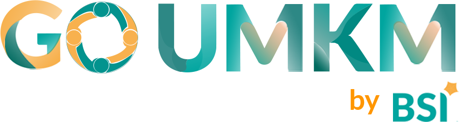
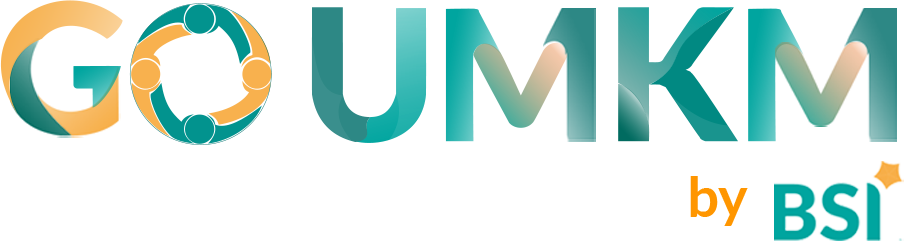

BSI UMKM CENTER
Yogyakarta
Platform digital marketplace produk unggulan UMKM lokal berbasis syariah. Temukan berbagai produk berkualitas dari pelaku usaha mikro, kecil, dan menengah di Yogyakarta.
Pusat UMKM Syariah
Mengembangkan ekonomi syariah bersama UMKM Yogyakarta


 
